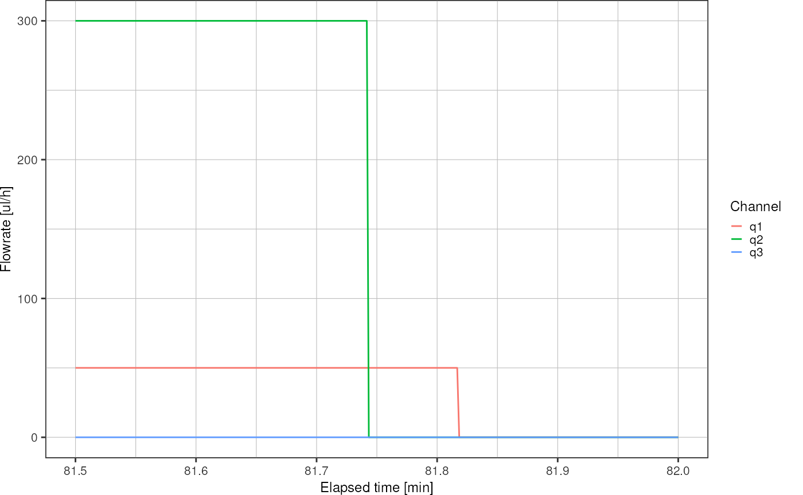
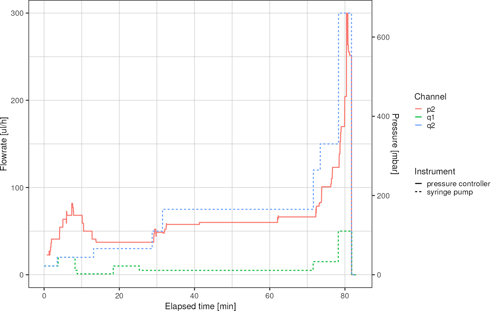

Log Files
logfiles.RmdDuring a picoinjection or droplet making experiment, it can be important to know the fluid flow parameters at any given time, e.g. in order to link them to an image that was taken at a specific time. Both, the OB1 pressure controller and the Cetoni syringe pump allow to record the history of parameters, i.e. pressure or flowrate, over time and store them in a log file.
In this vignette, I will format and analyse those log files in order to show them in a single plot.
library(picoinjector)
library(dplyr)
library(ggplot2)
# show fractional seconds with three digits
op <- options(digits.secs = 3)What do I want?
- plot with q_oil, q_emulsion and p_injection on the y-axis, time on the x-axis
- function to give me pressure and flowrates for a given time
Challenge:
- align pressure and syringe pump profiles such that the timesteps are the same
Overall workflow:
- Read in the log files
- Find values of elapsed time of both syringe and pressure log in order to align them
- Plot
syringe pump
The Cetoni syringe pump log file can be loaded using the convenience
function logfile_read_syringepump. This reads the CSV file
and formats the columns a little bit.
(This function works only for a particular configuration of the log file in the Cetoni Elements software.)
syringe <- logfile_read_syringepump("data/logfiles/syringe_pump_log_20220805_150634.csv")
syringe
#> # A tibble: 149,607 × 4
#> elapsed_time timestamp channel flowrate
#> <dbl> <dttm> <chr> <dbl>
#> 1 0 2022-08-05 15:06:34.569 q1 10
#> 2 0 2022-08-05 15:06:34.569 q2 10
#> 3 0 2022-08-05 15:06:34.569 q3 0
#> 4 0.1 2022-08-05 15:06:34.669 q1 10
#> 5 0.1 2022-08-05 15:06:34.669 q2 10
#> 6 0.1 2022-08-05 15:06:34.669 q3 0
#> 7 0.2 2022-08-05 15:06:34.769 q1 10
#> 8 0.2 2022-08-05 15:06:34.769 q2 10
#> 9 0.2 2022-08-05 15:06:34.769 q3 0
#> 10 0.3 2022-08-05 15:06:34.868 q1 10
#> # … with 149,597 more rowsIt can be seen that every row contains an absolute time stamp which will allow us to associate the flowrate with images data acquired on the microscope.
As will be shown later, the pressure controller log file does not contain absolute timestamps, just a column for the elapsed time. However, by aligning flowrate and pressure profiles, the absolute time stamp can also be inferred for the pressure log. To that end, one has to include an alignment mark during the experiment, e.g. by setting both, pressure and syringe pump to a specific value at the exact same time. By inspecting the resulting profiles, one can identify the alignment mark and shift the pressure profile so that both alignment marks conincide with the same time.
An overview graph of the syringe pump flowrate can be plotted using
logfile_plot_syringepump.
logfile_plot_syringepump(syringe)Here, the alignment mark is at the end of the experiment, around minute 81, where flowrate on channel 2 and pressure on channel 2 were set to zero. Zoom on the x-axis to find the precise time:
logfile_plot_syringepump(syringe) +
xlim(c(81.5, 82))
#> Warning: Removed 148704 row(s) containing missing values (geom_path).
Investigate the logfile rows in order to find the exact time when q2 was set to zero:
syringe %>%
filter(channel == "q2",
elapsed_time > 4904 & elapsed_time < 4905)
#> # A tibble: 9 × 4
#> elapsed_time timestamp channel flowrate
#> <dbl> <dttm> <chr> <dbl>
#> 1 4904. 2022-08-05 16:28:17.611 q2 300
#> 2 4904. 2022-08-05 16:28:17.711 q2 300
#> 3 4904. 2022-08-05 16:28:17.812 q2 300
#> 4 4904. 2022-08-05 16:28:17.911 q2 300
#> 5 4904. 2022-08-05 16:28:18.012 q2 300
#> 6 4905. 2022-08-05 16:28:18.111 q2 0
#> 7 4905. 2022-08-05 16:28:18.211 q2 0
#> 8 4905. 2022-08-05 16:28:18.312 q2 0
#> 9 4905. 2022-08-05 16:28:18.411 q2 0pressure controller
A drawback of the pressure controller log files is, that the system time is not stored. Therefore, we need to align the pressure profile with the syringe pump profile in order to get that information.
pressure <- logfile_read_pressure("data/logfiles/pressure_log.txt")
pressure
#> # A tibble: 394,856 × 4
#> elapsed_time channel value mbar
#> <dbl> <chr> <chr> <dbl>
#> 1 0 p1 target 0
#> 2 0 p1 read 0.612
#> 3 0 p2 target 50
#> 4 0 p2 read 50.0
#> 5 0 p3 target 0
#> 6 0 p3 read 0.970
#> 7 0 p4 target 0
#> 8 0 p4 read 0.833
#> 9 0.1 p1 target 0
#> 10 0.1 p1 read 0.605
#> # … with 394,846 more rows
logfile_plot_pressure(pressure)Find time when p2 was set to zero:
pressure %>%
filter(channel == "p2",
value == "target",
elapsed_time > 4861.5 & elapsed_time < 4862.5)
#> # A tibble: 9 × 4
#> elapsed_time channel value mbar
#> <dbl> <chr> <chr> <dbl>
#> 1 4862. p2 target 554
#> 2 4862. p2 target 554
#> 3 4862. p2 target 554
#> 4 4862. p2 target 554
#> 5 4862 p2 target 554
#> 6 4862. p2 target 0
#> 7 4862. p2 target 0
#> 8 4862. p2 target 0
#> 9 4862. p2 target 0align profiles
What are the times where pressure and syringe pump logs should be aligned?
tPressure <- 4862.1
tSyringe <- 4904.6Align pressure log to syringe pump log:
pressureAligned <- logfile_align_pressure(pressure, syringe, tPressure, tSyringe)
pressureAligned
#> # A tibble: 394,856 × 5
#> elapsed_time timestamp channel value mbar
#> <dbl> <dttm> <chr> <chr> <dbl>
#> 1 42.5 2022-08-05 15:07:17.069 p1 target 0
#> 2 42.5 2022-08-05 15:07:17.069 p1 read 0.612
#> 3 42.5 2022-08-05 15:07:17.069 p2 target 50
#> 4 42.5 2022-08-05 15:07:17.069 p2 read 50.0
#> 5 42.5 2022-08-05 15:07:17.069 p3 target 0
#> 6 42.5 2022-08-05 15:07:17.069 p3 read 0.970
#> 7 42.5 2022-08-05 15:07:17.069 p4 target 0
#> 8 42.5 2022-08-05 15:07:17.069 p4 read 0.833
#> 9 42.6 2022-08-05 15:07:17.168 p1 target 0
#> 10 42.6 2022-08-05 15:07:17.168 p1 read 0.605
#> # … with 394,846 more rowsplot
Remove unused channels:
syringe <- syringe %>%
dplyr::filter(channel != "q3")
pressureAligned <- pressureAligned %>%
dplyr::filter(channel == "p2")
# find out by how much the second y-axis has to be scaled:
r <- max(syringe$flowrate) / max(pressureAligned$mbar)Merge pressure and syringe dataframes:
df1 <- syringe %>%
dplyr::rename(value = flowrate) %>%
dplyr::mutate(type = "syringe pump")
df2 <- pressureAligned %>%
dplyr::filter(value == "target") %>%
dplyr::select(!value) %>%
dplyr::rename(value = mbar) %>%
dplyr::mutate(type = "pressure controller")
# scale pressure
df2 <- df2 %>%
dplyr::mutate(value = value * r)
df <- dplyr::bind_rows(df1, df2)
ggplot(df, aes(x = elapsed_time / 60, y = value, color = channel, linetype = type)) +
geom_line() +
scale_y_continuous(sec.axis = sec_axis(trans = ~./r, name = "Pressure [mbar]")) +
theme_pretty() +
labs(y = "Flowrate [ul/h]",
x = "Elapsed time [min]",
linetype = "Instrument",
color = "Channel")